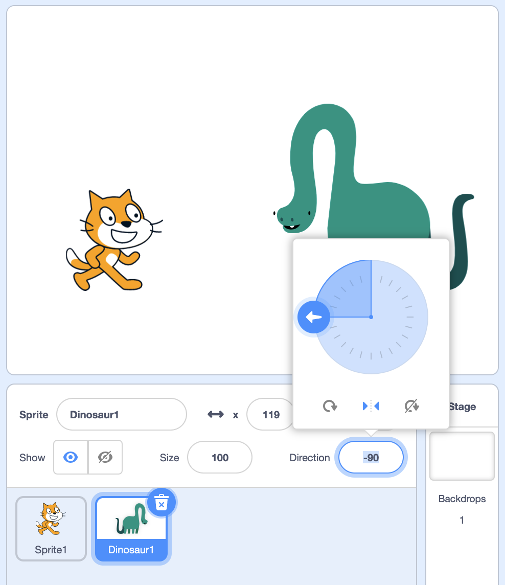
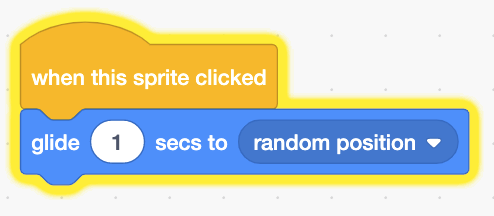
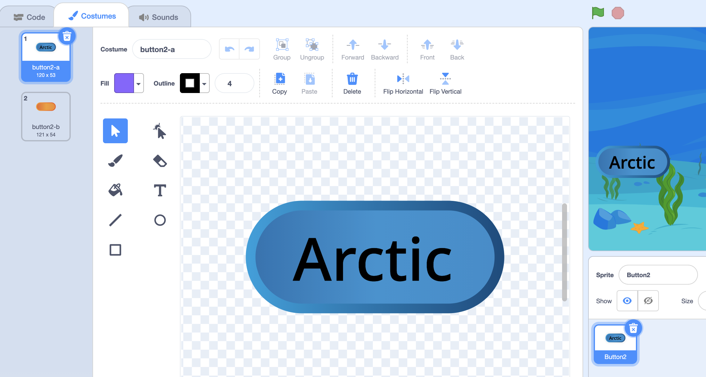
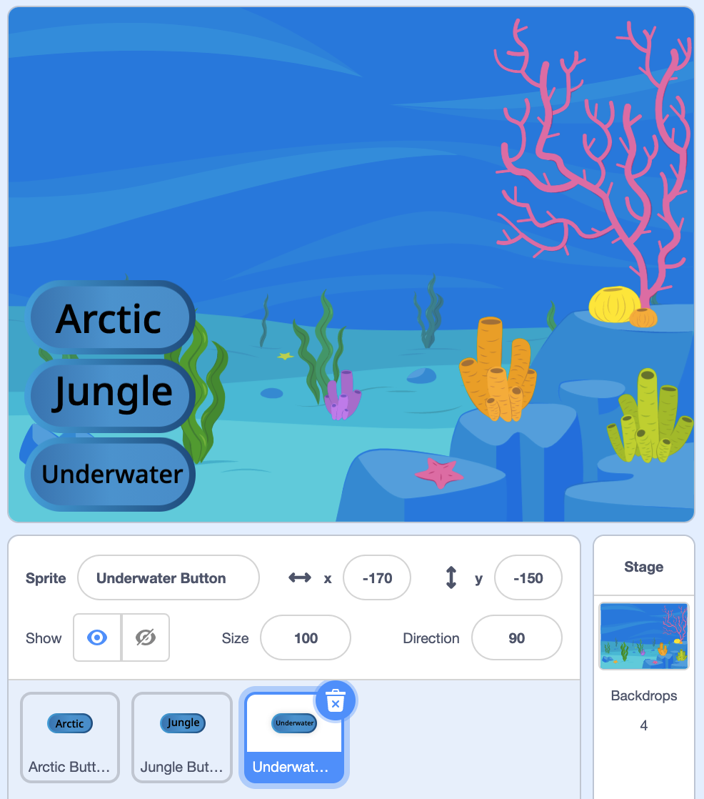

Events
Last 时间
- Last 时间, we put together sequences of instructions, or functions, by assembling stacks of blocks.
- We used functions to move our characters, or sprites, around the stage, draw, play sound, and 更多.
Events
- We’ll start with a new program with a cat, and start with a block we’ve seen before:
say [Hello!] for (2) seconds- Now, we can have our cat do this every 时间 the block was clicked.
- But we might want our cat to do something in response to us, or another sprite.
- We’ll add a dinosaur sprite, and turn it so our two sprites face each other:

- We’ll also add the same block for the dinosaur, but now if we want both our cat and dinosaur to say 你好, we have to very quickly click on these blocks for each of them.
- With multiple scripts and sprites, we won’t be able to do that ourselves quickly enough. It would be better if we could click a single button to start our 项目, and have all our scripts run automatically.
- It turns out that Scratch has a button, which looks like a green flag, to the top left of the stage, that starts our 项目. But nothing happens right now when we click it.
- We’ll need a new category of blocks, under Events. And in 编程, an event is just something that happens in our program, that our code can respond to.
- So we’ll drag out an event block called “when flag clicked”, and attach our “say 你好” block to it:
when green flag clicked say [Hello!] for (2) seconds- Now, our code is attached to the event of the flag being clicked. And when we click the green flag, our dinosaur says 你好.
- Nothing can be attached to the start of this script, since the event is what causes the rest of our code to run.
- We can select the cat sprite, and do the same thing by adding a “when flag clicked” block to the beginning of its script as well. Now, when we click the green flag, both of our sprites say 你好.
- In fact, someone else can run our 项目 now, When Flag Clicked, just by clicking the green flag, without having to know what the blocks look like and which to click on.
When Sprite Clicked
- We’ll remove our cat and dinosaur, and add a duck for our 下一页 示例, When Sprite Clicked.
- Now we’ll use a block called “when this sprite clicked”, which will make whatever code below run when our sprite is clicked:
when this sprite clicked go to (random position v)- Now, when we click on the duck in the stage, it will go to a random position. We could also replace the “go to” block with a “glide” block for it to move 更多 smoothly.
- Notice that, when we click the sprite on the stage, the script also lights up as it’s running:

Backdrop Chooser
- Now, we can build something that works like a button in a computer program, where something happens when that button is pressed, in Backdrop Chooser.
- We’ll add some backdrops to our 项目, and a sprite called Button2. We’ll drag the button to the left side of the screen, and add some text in its costume:

- Now we’ll go 返回 to the Code tab, and combine blocks from the Events and Looks categories:
when this sprite clicked switch backdrop to (Arctic v)- Then, when we click this button, the backdrop will change.
- We can right-click, or control-click the sprite, and select the “duplicate” item to make a copy of it. We’ll rename one to “Arctic Button”, and the other to “Jungle Button”. Then, we can change the text in the costume of the “Jungle Button” to say “Jungle”.
- Notice that the top right of the code editor will have a slightly transparent version of the current sprite, so we know what script we’re changing. We’ll change the code to switch the backdrop to “Jungle” for this button:
when this sprite clicked switch backdrop to (Jungle v) - We’ll drag our “Jungle Button” to the left, under the “Arctic Button”, and repeat this process for a button called “Underwater Button”. The blocks for that button will be:
when this sprite clicked switch backdrop to (Underwater 1 v) - And we’ll stack our buttons on the stage like so:

- Now whoever uses our 项目 can interact with it, changing the stage to whatever they like.
Drum Kit
- We’ll change our backdrop 返回 to the plain white backdrop, and add some new sprites.
- We’ll choose a few instruments, “Drum-snare”, “Drums Conga”, and “Drum-cymbal”, and arrange them on our stage for Drum Kit.
- For each of them, we’ll add the “when this sprite clicked” block from the Events category, and a “play sound” block from the Sound category:
when this sprite clicked play sound (tap snare v) until done- We’ll do this for each instrument, with a different sound that matches each one.
- Now, we have a “drum kit” that we can play by clicking on any of these sprites.
- Recall that a click is an event, and our code is responding to these events.
Swimming Fish
- We’ll remove our drums and add a fish. We’ll use the “when key pressed” block to start a new script for it in Swimming Fish:
when [space v] key pressed play sound (bubbles v) until done- Now, when we press the space bar on our keyboard, our fish will play a sound.
- And we can click the dropdown 菜单 to customize the “when key pressed” block to respond to other keys.
- We’ll change it to:
when [right arrow v] key pressed change x by (10)- We’ll use a Motion block to move our sprite’s position’s x-value by 10 steps when the right arrow key is pressed.
- We’ll right-click, or control-click this script, and select the “Duplicate” option to make a copy of these two blocks. We’ll click to place it in the code editor for our fish sprite, and change the new script to respond to the left arrow:
when [left arrow v] key pressed change x by (-10) - But our fish is moving backwards, so we’ll first add blocks to make sure that it’s facing right when the right arrow key is pressed:
when [right arrow v] key pressed point in direction (90) change x by (10)- Recall that we could use the dial in the sprite panel to check what number to use for the value of direction.
- 下一页, we’ll make sure that it faces left when the left arrow key is pressed:
when [left arrow v] key pressed point in direction (-90) change x by (-10)- Our fish is upside-down at first, so we’ll need to set the rotation style to be “left and right” in the sprite panel. We can also use a block, “set rotation style”, to do that for us.
- We’ll repeat this so our fish can move up …
when [up arrow v] key pressed change y by (10) - … and down:
when [down arrow v] key pressed change y by (-10) - Now, we have the ability to program sprites to move all around the stage, in response to keys being pressed.
Changing size
- We’ll add a few 更多 scripts to change the size of our fish, when numbers are pressed:
when [1 v] key pressed set size to (50) % when [2 v] key pressed set size to (100) % when [3 v] key pressed set size to (200) %- With these, we can move our fish around the stage as before, but also change how big or small it is by pressing the 1, 2, or 3 keys.
Loudness
- We’ll delete our fish and change our backdrop 返回 to a plain white backdrop, and add a new balloon sprite for Balloon.
- Let’s try using another block in the Events category, “when loudness greater than”. Our browser might ask us for permission to use the microphone, since Scratch will be listening to our microphone.
- We’ll drag out this block, and add one to change the size of our balloon when the loudness Scratch hears is greater than 30:
when [loudness v] > (30) change size by (10)- A loudness value of 0 is like silence, and 100 will be very, very loud, so we can try different numbers for the level of loudness we want Scratch to listen for.
- Then, our code below will respond. Now, when we make noise for our microphone to hear, our balloon will get bigger and bigger.
Timers
- We can change the value of the dropdown 菜单 in the block as well, from “loudness” to “timer”:
when [timer v] > (30)- It turns out that, when we start our 项目 by clicking the flag, there is a timer keeping track of how much 时间 has passed.
- So this block will cause some code to run when the timer reaches a particular number.
- We’ll add our cat and dinosaur 返回 in Timer, and for our cat, we’ll use the same script as before:
when green flag clicked say [Hello!] for (2) seconds - As for our dinosaur, we’ll have it wait two seconds after the flag is clicked:
when [timer v] > (2) say [Hello!] for (2) seconds - Now, when we click on the green flag, our cat will say 你好 first, and our dinosaur will wait before saying 你好 返回.
- Every 时间 we start our 项目 by clicking on the green flag, the timer is reset to 0, and will count up the number of seconds until our 项目 is started or stopped again.
When Backdrop Switches
- There are other events, too, like this block:
when backdrop switches to ( v)- Now, if the backdrop switches, we can make a sprite do some actions.
- By using these Event blocks, we can make our Scratch 项目 interactive and respond to various events, like clicks or keypresses.